formulas/formulae
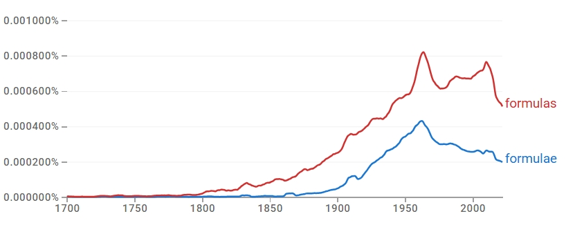
결론
formulas와 formulae는 동일한 기본 의미 영역을 공유하지만, 규칙 복수형 formulas가 더 넓은 사용 기반을 확보한 채 서로 다른 레지스터로 점차 배분되는 사례다. formulae는 수학·과학·경제학·신학 등 전문적·학술적 맥락에서 제한적으로 유지되는 반면, formulas는 그 학술적 의미를 일정 부분 유지하면서도 분유·화장품·의약품 같은 상업 제품, 행정 기준, formulas for success 같은 비유적 표현까지 포괄하며 일상적·실용적 영역으로 확장된다. 따라서 이 사례는 규칙형 우세 → 장기 규칙형 우세 유지 → register 분화의 구조를 보인다.
연구 결과
과정 및 결론 도달 과정 · 사용 도구
1차는 Google Ngram 사용량 그래프로 두 형태의 장기 사용량과 우세 형태를 파악했고, 2차는 같은 Ngram 그래프에서 우세 형성 경로(즉각 대체인지 장기 병행인지)를 읽었다. 3차는 Google Ngram 형용사·명사 연어 그래프와 COCA 맥락 분석(매체·용례)을 결합해 두 형태가 어느 의미 영역·레지스터에 배분되는지를 해석했다.
세부 정보 · 구간 별 분절
초기에는 두 형태 모두 사용량이 낮지만, 19세기 초 이후 formulas가 점차 증가하고 19세기 후반부터 상승세가 분명해진다. formulae는 19세기 후반 이후 본격 증가해 20세기 중반까지 확대되지만, 전 시기에 걸쳐 formulas가 더 높은 사용량을 유지한다. 현재는 규칙형 formulas가 뚜렷한 우위를 점한다.
한 형태가 다른 형태를 즉각 대체한 것이 아니라, 두 형태가 일정 기간 병행 사용되는 가운데 규칙형이 더 넓은 사용 기반을 지속적으로 확보하며 상대적 우위를 유지해 왔다. 즉 규칙형 우세 → 장기 규칙형 우세 유지의 경로다.
형용사 연어에서는 mathematical, structural, chemical, simple 등 유사 연어를 공유해 한때 수학·과학 영역에서 병행 사용되었음이 확인된다. 그러나 명사 연어에서 formulas는 infant/milk formulas(상업 제품), funding/allocation/benefit formulas(행정·재무)로 확장되는 반면, formulae는 quadrature/transformation/recurrence/interpolation formulae 등 제한된 전문 맥락에 머문다. COCA에서도 formulas는 학술적 의미(logical/mathematical formulas)를 유지하면서 상업 제품·비유적 용법(formulas for success)까지 확장되는 반면, formulae는 수학·과학·경제학·신학 등 전문 담화에 한정된다. 따라서 두 형태는 register 분화로 설명된다.
고전형 formulae는 학술 담화가 라틴어 문법을 규범으로 삼던 전통 속에서 권위 있는 형태로 자리 잡았으나, 영어식 형태를 선호하는 실용적 언어 사용이 확산되면서 규칙형 formulas가 일반 표준으로 자리 잡았다.
참조 이미지
연어 그래프 · COCA 맥락 캡처 펼치기
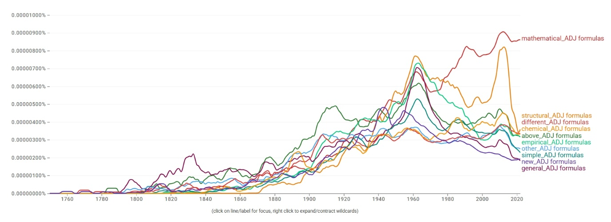
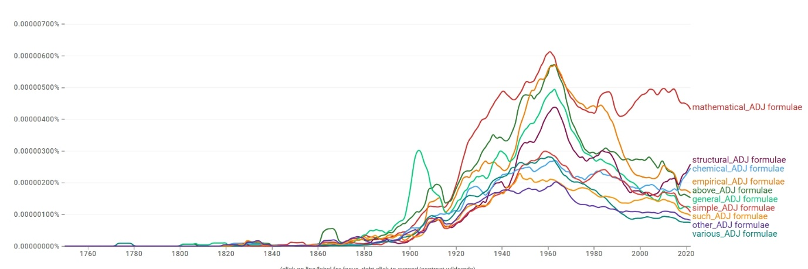
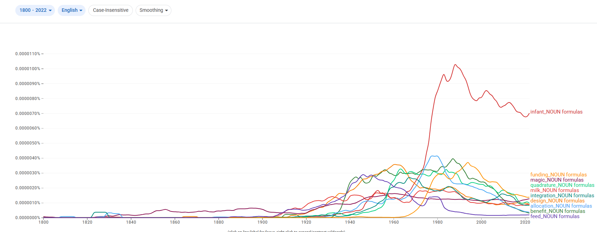
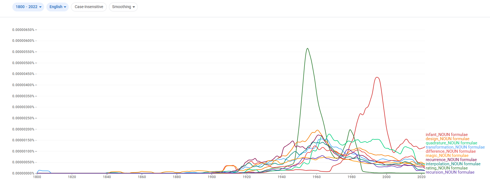
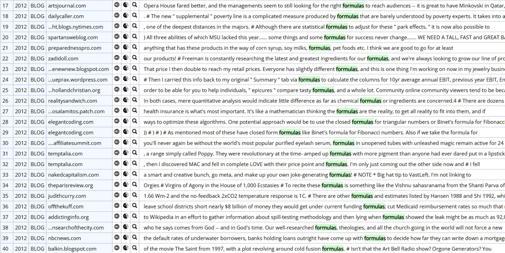
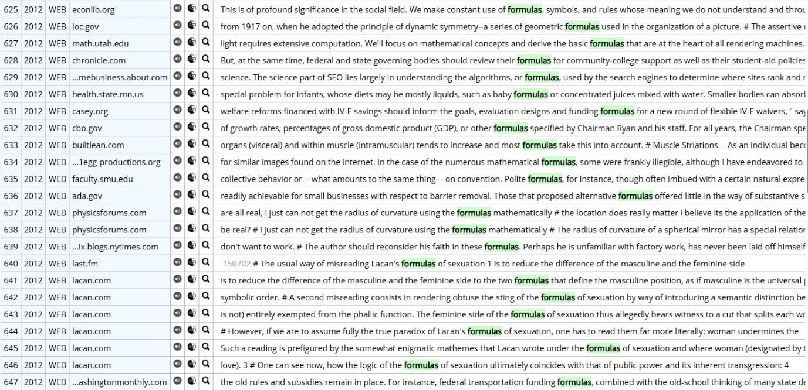
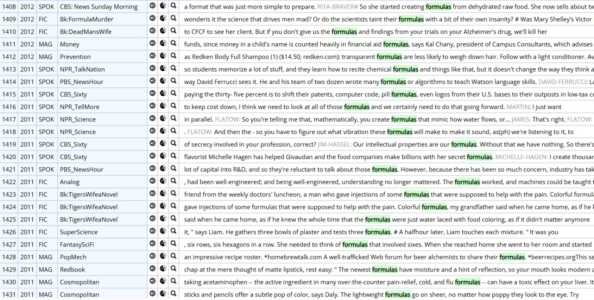
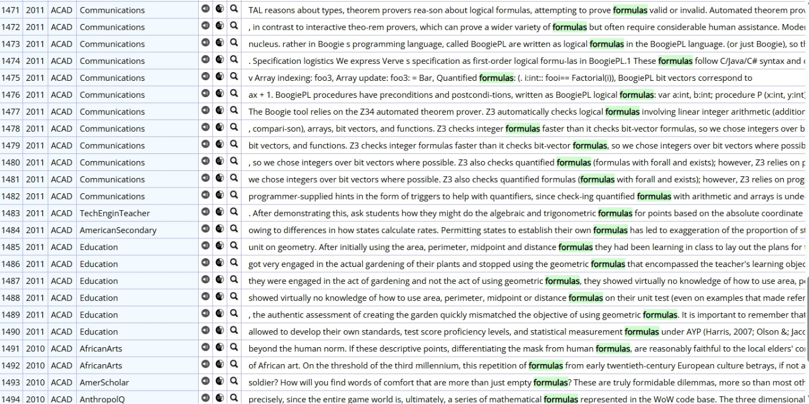
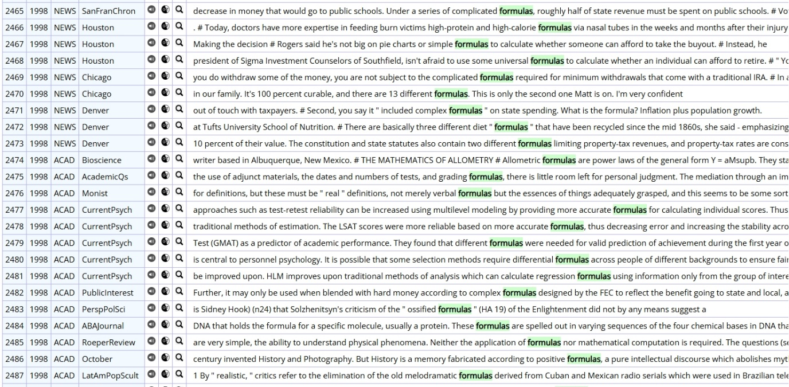
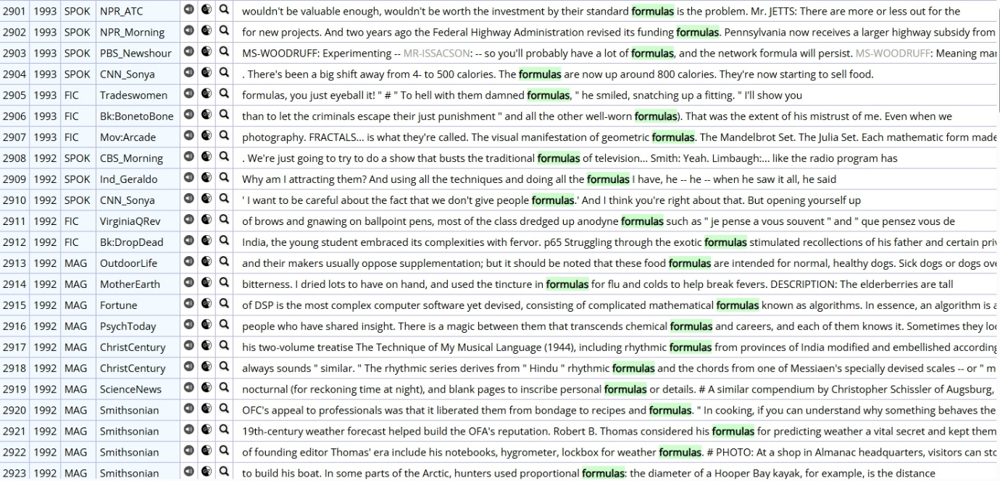
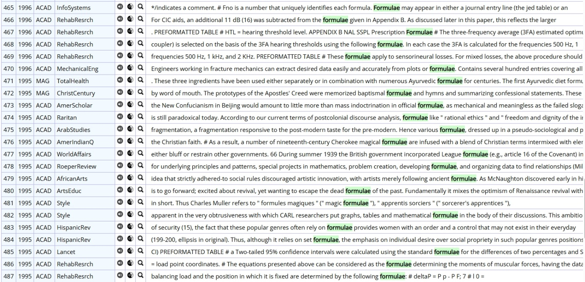
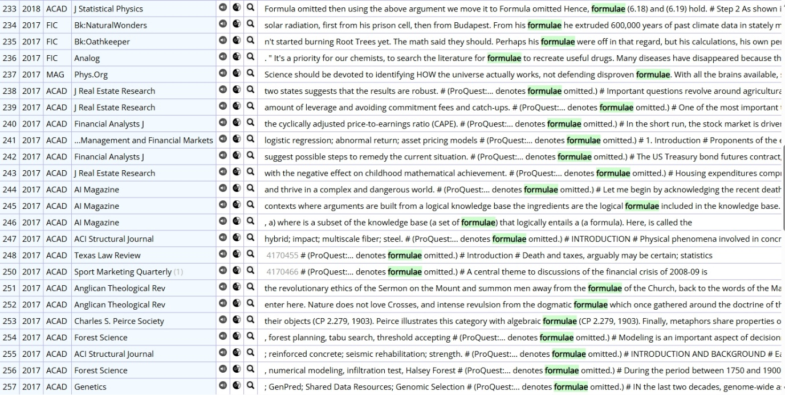
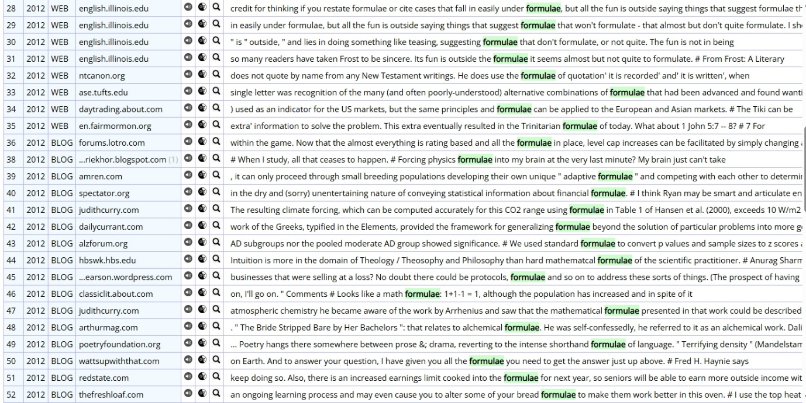
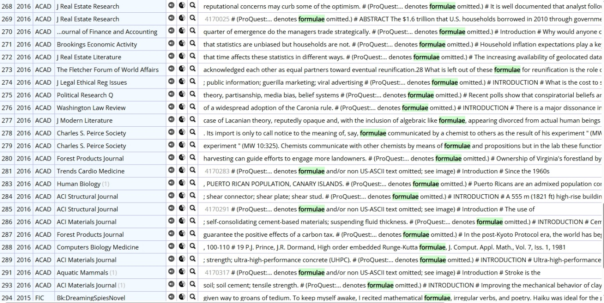
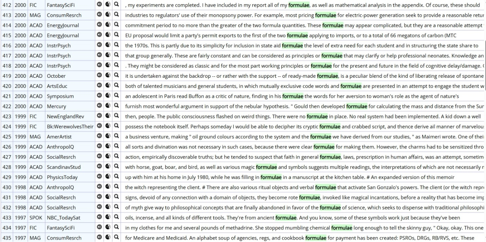